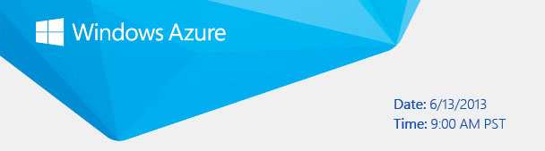

|  | |||||||||||||||||
|
Windows Azure Technical Deep Dive Mural.ly ABOUT THIS EVENT In any decision process, there is a tipping point. As companies plan their cloud strategy, the tipping point of when to go to the cloud – and how – is mission critical. Online collaboration site taps into Windows Azure for speed and availability. Mural.ly makes it easy for creative teams to think, imagine and discuss their ideas. Mural.ly enables visual people to shape their ideas together, fully unleashing their imagination without getting in the way of their flow. Mural.ly is built, tested, and deployed using Windows Azure. The team uses a Windows Azure Virtual Machine running Jenkins for continuous integration enabling them to deploy up to 40 times per day into production. The entire application runs on Windows Azure Web Sites to handle millions of daily requests from its customers, prospects and users. Come learn more about their decision making process, the results they have seen to date and ask questions directly of the Mural.ly team. PRESENTER Johnny Halife |
|||||||||||||||||
|
|||||||||||||||||
|
Microsoft respects your privacy. Please read our online Privacy Statement.
If you would prefer not to receive future promotional e-mails from Microsoft Corporation, please click here to unsubscribe.
Microsoft Corporation |
|||||||||||||||||